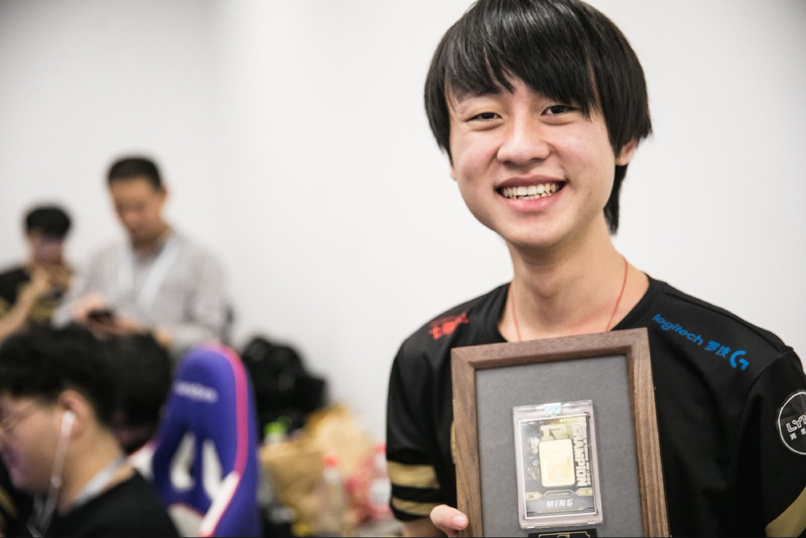

【LPL选手故事】Ming——不变
除了对职业的态度和温柔的个性，史森明仍旧没有改变的也许还有那份天真。聊着聊着，他会突然和你聊起他自己的生活，以及那些他觉得很有趣的梦。
史森明笑起来傻里傻气的。
但他还是笑，坚持笑，一以贯之地笑。他的笑出现在赛场内外，俱乐部，官方纪录片以及摄影师一村的镜头里。久而久之，这种笑容成为了他的标志，并连带着传递出一种信号，这孩子似乎永远都处于开心的状态。
大部分情况下确实如此。当过去的史森明每一次面对自己职业生涯第一位领路人PDD的时候，对方心中永远会浮现出的两个字是“甜美”。直到后来去到RNG，遇到人生之中另一位重要角色，教练Firefox之后，这两个字被改成了“温驯”。
一些柔软美好的性格特质始终围绕着他，并和职业赛场的冰冷相冲突、抵触。很多人看到了掩映在RNG金色Logo下的荣耀，忘记了背后的汗水与努力。史森明成长在初代YM战队，茁壮于新一代全华班肥沃的土壤，并在一年的历练之后走向辉煌，在经历高空坠落之后，现在，他和他的队伍又重新爬了起来。
回望过去，在登上LPL舞台的三年里，史森明从素人成长为狗妃，从不被待见成长为“护国神牛”，从“年度最佳新人”成长为“年度最佳辅助”，现在，他已是解说米勒口中“辅助的标杆”和“AD的梦寐以求”。漫长的成长过程之中，棱角被磨砺，个性被增减，坚硬的更坚硬，温柔的更温柔。
当然，也有些东西从未改变。
笑容只是其中之一。
一、
“如果不打职业，会去干嘛？”
“去打工吧，帮我爸开车。”出生于1998年的史森明来自于一个广东惠来的正常小家庭，爸爸创业做货车生意，妈妈在家操持家务。
兄弟姐妹多，有哥哥和姐姐；儿时玩伴少，不知道为什么，“小时候邻居全是女的”。不想和女孩子们玩跳皮绳的史森明只能跑去找大自己两岁的哥哥和他的朋友们。“他们都比我大，当时可能会觉得我很幼稚吧。”
上小学的时候，爸爸觉得别人家里都有电脑，怕史森明和哥哥去网吧，所以也买了一台。爸爸用电脑玩别的游戏，史森明就坐在旁边看着。放学早的时候，史森明到家马上用电脑玩一小时，之后再出门找同学，原因很简单，“哥哥回来了，我哥也要玩。”
第一次接触到《英雄联盟》是在哥哥的朋友家，他们帮着刚有QQ号不久的史森明申请了一个内测码。之前只玩过《QQ飞车》《穿越火线》的史森明从来没有接触过这种类型的游戏，连玩人机都能玩上很久。那个时候的他，并没有发现自己在这款游戏上的天赋。
直到从匹配打到排位，从定级赛打到白金1，从白金1又打到钻石1。上不去分的时候，史森明会逃回到别的游戏里，但一段时间后又忍不住再回来。上了钻石后，他看着王者前50的ID眼馋，一个一个点过去，每个人都加一遍，希望其中某一个能通过自己的好友申请，好让自己可以和朋友们炫耀炫耀。
“崇拜。就感觉他们每个人都好帅，希望可以给我好友位。现在想想，怎么可能会同意一个陌生人的好友申请嘛。”后来，史森明自己打上了王者443点，再后来，他打进了国服前十。第一次上王者，他还发了QQ空间，很开心，觉得“终于和那些人差不多了”。
S4之前，史森明不关注职业比赛，在他因为机器人而爱上的辅助位置上，他只知道国内的卷毛和国外的Madlife。S4时期，他偶然间看了一场OMG的常规赛，看到辅助位置上坐着的诺夏，他心有所感。“自己也很想坐上去。”
到了S5，退役选手PDD开始筹备自己的战队MGB（后更名YM），并通过网络进行选手招募，史森明看到了这个消息。“是不是机会不知道，但真的很紧张”。简历投递出去之后，PDD通过远程OB的方式看了史森明一整天的Rank，从早上八九点到下午五六点，“印象中，似乎赢的多一些。”他记得结束之后对方给的回应是，“表现还不错，可以来试训么？”
史森明超开心。但是爸妈不同意，怕儿子被传销骗。无奈，他让爸妈看PDD直播，说“我要去这个人那里打职业”，对面还是不信。消耗了一段时间无果，正在上高中的哥哥叫上史森明一起去在广州工作的姐姐那里玩。去了广州之后，他们仔细考察了MGB战队，觉得没什么问题。
纠结，只有纠结。未来的未知数尚未展开，还要先过爸妈的关。史森明记得那个下午，他在广州给爸妈打去电话，又一次坚持了自己想去上海，去打职业的想法， 不意外地得到了爸爸的坚决反对。放下电话，他犹豫了。他担心自己真的被骗，也幻想过自己被骗之后爸妈伤心的样子。
“想去的话就直接去吧，不用管太多。”距离现在四年前的夏天，还在上高中的哥哥用一句话把他的弟弟从乱麻般的想法里拉了出来。
夏天结束，弟弟史森明终于来到上海，开启了自己选择的人生。
二、
关于加入YM的故事，队伍老板PDD还有另外一个细节。
其实，在最早一批通过邮件招募的选手里，史森明的邮件因为工作人员的疏忽没有被筛选到。最后倒是他自己在粉丝群里找到了PDD的女友，才最终和战队取得联系，成功被选中。“甜美、可爱、呆萌、羞涩”，经历过电竞蛮荒时代的PDD没有想到会自己招进这样一个人。“他大概是那种所有俱乐部老板都最喜欢的类型了，就是哪怕薪水不高，你也会想着给他加薪的那种。”
现在回看，最早一批YM的选手都有着非常不错的天赋和实力。上单和打野两位韩援，中单Viper，下路是在S5冲上国服前十的双排基友——Ming和Ning。当时的职业赛场没有太多人知道这些后生仔的名字，对于当时的他们来说，“如何变成一个成熟的职业选手”才是最需要做的事情。
“其实YM在打很多比赛的时候，我都和队员们说过一句话，这场比赛我甚至不需要你们赢，我需要的是，通过这场比赛你们能够获得什么，你们这么多天，这么长的职业生涯，一两年的时间耗费在这里，你究竟想要的是什么？”2015年年底，YM以打入LPL为目标扬帆起航，却在之后的几年里上演了数次差之毫厘的剧情。与此同时，许多优秀的职业选手也从这支队伍里走了出来，去到更大舞台展现自己的光彩。
2016年春天，LPL解说米勒接到了一个临时任务——解说同年LSPL春决，一场发生在YM和EDE之间的对决。一边是激进的新生力量，一边是老辣的豪强二队。在这场BO5里，米勒第一次注意到了这个ID叫做Ming的选手，刻在他脑中的第一印象是“老练，成熟，不像是一个新人”。
然而对于坐在场上的史森明来说，这却是他自己第一次面对如此重要的比赛，关系着一个冠军的归属和一张直通LPL的门票。建队第一个赛季冲上顶级联赛？看上去遥不可及的梦似乎就快要变成现实。
比赛开始。第一局YM被破三路，对手大比分碾压获胜。第二局，PDD出现在队员身后，但赛前的一波讨论并没有对团队起到太多的帮助，YM再一次不敌对手稳健的运营，比赛被推至0：2的悬崖边缘。“似乎YM进攻的风格在EDE面前完全施展不开。如果YM再不作出调整的话，就真的要爆炸了。”第三局赛前，解说米勒做出了这样的判断。
比赛的走向在第三局才开始出现转机。YM将对手拖入了对攻和僵持的节奏，24分钟的一波Rush大龙+果断反打奠定胜局，YM扳回一局。接下来的第四局YM渡过了前中期的劣势，在后期抓住对手失误团灭并拿下大龙，再得一分。比赛进入最后的决胜局。
哪怕到了现在，这场决胜局依然是史森明在YM时期最刻骨铭心的失利。赛前选手们经过解说席，米勒感叹“好有气势，每一个人都像是在燃烧”。场上形势也确实如他所想，半小时之后，YM已经领先四个人头加一万多的经济，天大的优势摆在YM五人面前。
“越是想赢，打的就越拘谨。”这是PDD再次回忆那一场比赛时的感受。前三十分钟的大优势被对手一点点拖没，最终EDE抓住机会团灭YM时，经济差距已经缩小到仅有的一千块。AmazingJ激动地站起来打完了剩下的比赛，之后EDE队员拥抱在一起，迈出了属于他们2016年“三级跳”的第一步。另一边，没有人看到YM队员们落败后的模样。
时间回到第五局比赛开始前，另一个人在EDE的阵营中冷眼观战。当时他旁边坐着第一次从台湾来到大陆的助教狗八，第五局比赛快要开始，到了真正听天由命的时刻，狗八激动地快要哭出声来，他说，“风哥，我们还能打。”对方回应：“嗯，看下去吧。”
这便是那场比赛里除了米勒之外，另一个注意到Ming的人。牛头和莫甘娜，Ming用这两个英雄在整场BO5中给对手制造了太多的麻烦。“整场BO5下来，两边选手都出现了明显的心态起伏，唯一一个让我感觉到没有太大起伏的人，就是Ming。”
当时的Ming还不知道身为EDE助教的Firefox是谁，也不知道两个人之后的命运会有怎样的交汇。2016年年底，Firefox离开IM加入全华班RNG，在其他位置都确定的差不多的情况下辅助空缺，他想到了史森明。
“只有这一个辅助是可以的，”风哥回忆2017年全华班组建前夕，“当时我和对面说，如果拿不到这个名额，我就不去。”
三、
对于PDD来说，放走史森明并不是一个特别轻松的决定。
到了2016年年底，选手本身的技术和潜力已经开始展现，更何况他温良的性格和端正的态度。转会前夕，PDD多次和史森明聊天，他说：“我想让你去RNG，你想不想？”每一次得到的都是否定的答案，“他说他就想跟着我。”
作为老板，PDD很触动。“我自己也打过职业，我也知道选手和老板的关系是怎样的，特别是当面临这种重要人生抉择的时候。”“所以当他对我说出这句话的时候，才是我能够做出这样的决定的时候。我觉得那个时候，我要替他做这个决定。”最终，PDD把史森明从YM送走，送进了2017年的RNG。
站在现在的角度回看，2017年年初的RNG是个完完全全的未知数。少了2016年Looper强大的线上能力，换来一个刚刚通过试训回到一队的Letme。少了Mata的最强大脑，换来一个从来没有打过LPL的史森明。而站在这群人背后的，是另一个更大的不确定因素——Firefox。春季赛首战RNG对阵IM，面对老东家的Firefox带着新团队0：2败下阵来，焦虑的连着三天没睡着。
“狗妃”。这个有些调侃意味的词汇被用来形容所有辅助过Uzi的选手——足见简自豪对于中国千万英雄联盟玩家和赛事用户强大的影响力。从S3的Tabe，到S4的Zero，S5的OMG众，全明星上的Pyl，S6春天的天灾末日，夏天的Mata，直到现在的史森明。从2017到2019，他成为了搭档Uzi最长时间的辅助选手，也是“最强狗妃”的有力竞争者。
对于在2017年年初刚刚加入RNG的史森明来说，“成为Uzi的辅助”是种甜蜜的烦恼。Uzi是许多辅助心目中认定的最强AD，而辅助这样一位选手也绝非易事。
严格，直率，求胜心强，Uzi的个性是显而易见的。在主教练风哥眼里，如果过去IM中“Road+Jinjiao”是强势辅助配弱势AD的话，那么2017年年初的RNG情况则刚好相反。“当时的小狗，对线的时候一般都会比较强势地指挥小Ming。”
这样的指挥和相处，莫不是另一种艰难的教学和提升。“作为新进入职业的选手，或多或少都要有这样的经历。如果你真的想和对方成为背靠背的队友，可以完全信任彼此的那种，除了一帆风顺之外，也一定要经历这样的时期，这是没有办法的事情。”对于前东家PDD来说，能让史森明成为Uzi的辅助，同样是他送走这位选手的重要原因。“其实他吃了很多苦，但这几年对他来说不仅是职业生涯，从人的角度上都是综合性的提升。”
2017年对于RNG来说是风雨飘摇又充满收获的，虽然结局并不圆满——全球总决赛上海站RNG与SKT苦战五局最终落败，那一场的嘉宾解说正是PDD，他看着自己曾经的队员在场上勇敢地面对强大的魔王，比赛结束回程的路上，车里放着忧伤的歌。
那一年里RNG没有拿下任何一个联赛冠军。春季赛决赛被WE 0：3横扫，夏季赛决赛又被EDG让2追3，iBoy封神，Uzi成为了背景板。而到了全球总决赛，许多人又回过头来期待他们，场边立起了“Keep your dreams & Never give up”的灯牌，比赛结束之后，“青春落幕”的梗不胫而走。
史森明和Uzi的磨合，小虎和香锅的精进，Letme逐渐开始的“众生平等”化，一切的一切都是2018最好的铺垫。没有2017，也许我们不会在接下来一年的赛场上看到那个稳定优势，默契十足的下路组合。对于史森明自己来说，最大的转折点恰恰是输给SKT的一瞬。“那是我第一次感觉到，其实自己和这些世界级辅助的差距并没有那么大。”
当然，从年初到这里的过程并非没有痛苦。2017年全球总决赛赛前集训期间，RNG下路组合状态失常，陪练团的其他下路组合几乎没有能打得过的。越输压力越大，支撑不住的史森明拉着风哥在选手酒店外面散步，散着散着，他哭着说“自己打不下去了”——在风哥的印象里，这是这孩子第一次流泪。安慰之后，他又回到了训练室。
而让解说米勒印象深刻的是另外一个场景。2017年夏决，RNG被让二追三的一瞬间，他感到深深的无奈，“难道Uzi就真的从此一生无冠了么？”后来在后台，大家要上车离开时候，米勒突然看到小Ming拥抱了神情低落的小狗，“一个那么瘦的人抱着一个那么胖的人”，他感受到了AD和辅助之间的那种相互之间的呼应。
“那一瞬间，就是我对狗史组合印象最深的时刻。”
四、
“其实还是有收获的，但说不出来……不知道怎么说。”谈到2018年全球总决赛上的失利，刚刚打开话匣子的史森明又沉默了。几分钟之后，他开始尽力压制泛红的眼眶，话题不得不从这里岔开了。说这话的时候是2018年年末，世界赛已经过去两个月，RNG全队从海南团建归来，那一次团建，每一位队员都向全队倾吐了自己的心里话。
然而，伤口并没有那么迅速地痊愈。
不仅对于史森明，对于RNG的每一个成员来说，这都是个颇为残酷的故事——在全队最为鼎盛也最为辉煌的一年的末尾坠落，以至于我们甚至很难去定义2018对这支队伍来说到底意味着什么。新的一年来了，姿态、Letme、香锅相继退役，这支队伍在或主动或被动地发生改变。

Ming依然停留在赛场上，和Uzi一起。今年4月10日，PDD召集曾经的队员来直播间做客，直播结束之后大家一起出去吃饭。Ming和Ning，看到原本两个没人知道姓名的双排基友一点点打出成绩，之后走上不同的道路，接着站上赛区乃至世界的顶峰，PDD心中颇有感触。
谈到Ming和RNG在2018年的失利，他有时候也想到发生在自己身上的故事。2013年全明星前夕，22岁的刘谋被许多人认为是“世界第一上单”，却在决赛里被名叫“Shy”的韩国选手洞穿，“一炮四个PDD”。
“当年我花了七个月的时间走出来。我知道七个月之后我能在新加坡的IEM上和Shy再打一次，我知道，这是我人生之中最重要的一个机会。我不在乎这个比赛关注的人有多少，我只知道如果我能赢他，那我可以告诉自己，我还行。”
也许对于职业选手来说，走出困境的最好也最艰难的方法也许就是接受失败，然后重新翻越那道也许“看一眼都会害怕”的鸿沟。“大家都是打过职业的，我特别明白，这条沟要翻过去的话要怎么样？他们唯一的机会就是世界赛，在那个赛场上，他们才有机会真正的重生。”
2019年春天，RNG成绩一般，没有取得太多积分。夏季赛，他们开始逐渐稳定发挥，最终进入决赛——在见证新王FPX登基的同时，也获得了进入2019全球总决赛的资格。“要进世界赛，看来我们得夏季赛夺冠才行啊。”夏季赛前的北京基地，史森明没想到命运的奇妙安排。
时间回到2018年年末的见面。尽管因为伤心的话题而红了眼眶，但史森明还是很快调整好了情绪。当时的他要面对的，是一整个未知的2019。
“明年的比赛有信心么？”
“当然。没信心的话，我要怎么打。”
五、
“电竞铁人”，一个和史森明形象完全不相符的外号在去年悄悄被安在了他的头上。许多玩家发现，在没有替补的情况下，史森明完整地跟完了2018年近八个月的密集赛程，从常规赛到季后赛，从MSI到亚运会。
这并非史森明在2018年的进化，而是他从开始打职业之后一路至今的坚持。他对于职业的努力和付出从来都未曾改变。而这些“不变”的东西，一点点化作了他身体的伤病和手中的奖杯。2018年MSI，在拍下巴黎金雨的同时，摄影师一村也记录下了史森明贴满膏药的后背。他想，“这支队伍里，有伤的不只有Uzi。”
PDD说，史森明给人最大的感觉是“善良”。“不管你的目标是什么，你的生活状态怎样，你的内心深处总还是有一个最原始的模样没变。”
Firefox说，对于现在的史森明来说，最需要做的“保持”。“保持好的心态和状态是他成长到现在这样的关键，所以希望他能够继续下去，不会因为什么事情而松懈，也不会给自己太大的压力。”
而除了对职业的态度和温柔的个性，史森明仍旧没有改变的也许还有那份天真。聊着聊着，他会突然和你聊起他自己的生活，以及那些他觉得很有趣的梦。
“没打职业的时候，会梦见自己打职业时候的样子。”
“S4在韩国的决赛，我梦到自己坐在Zero的位置上，旁边就是Uzi。”
“也会梦到S7春决失利之后在后台的样子，还有去年MSI四强开会讨论选谁做对手时的那种氛围。”
“不过，我梦到到最真实的梦还没实现。”
“去年差一点吧。”他这样说。
